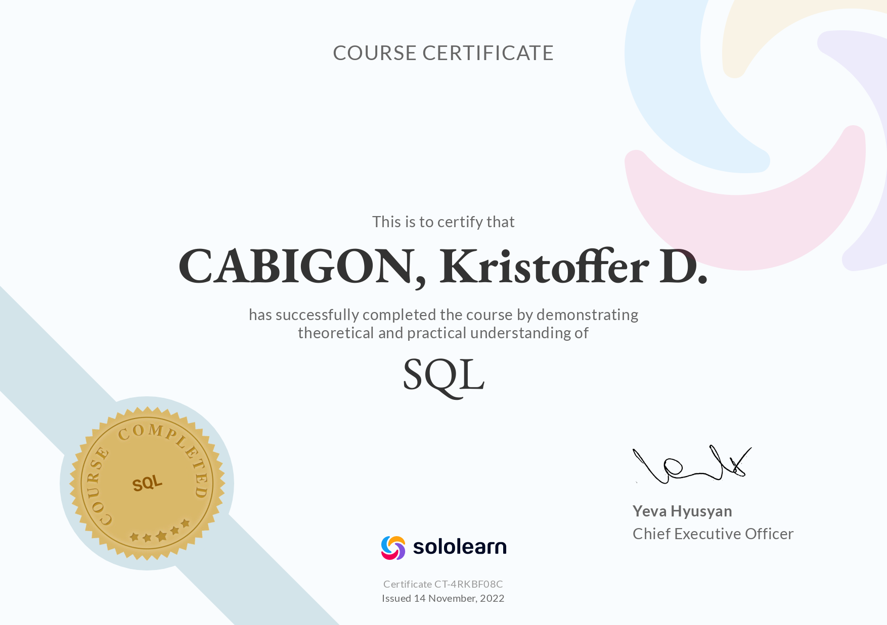

Get To Know More
ABOUT ME
Software Developer
Kristoffer Cabigon
Enterprise web · legacy modernization · application support
Caloocan, Philippines
Click or drag to flip
Transforming complex business operations into streamlined digital systems.
Hello! I’m Kristoffer Cabigon, a software developer based in Caloocan, Philippines. I specialize in enterprise web development, legacy system modernization, and application support.
My background bridges hands-on database architecture, API integration, and user-focused frontend engineering. From modernizing mission-critical legacy desktop tools to architecting dedicated ticketing workflows, I focus on building dependable software that solves operational bottlenecks and scales cleanly.
Where I've Worked & Built
EXPERIENCE
Application Support
Executive Optical
Application support, system testing, and workflow and database documentation. Assisting branch and Head Office users, documenting system workflows and MySQL databases with DFDs and ERDs. Independently developed and presented the internal EO Ticketing System to improve the support workflow.
Systems Programmer
Classic Savory
Enterprise web development, legacy migration, and integrated business systems. Migrated VB.NET and Crystal Reports applications into an integrated Laravel and Next.js platform for HR, biometrics, payroll, and accounting, including database migration, role-based access control, scheduled biometric data retrieval, and local server deployment.
Bachelor of Science in Information Systems
University of Caloocan City
Focused on software development, database design, systems analysis, and enterprise information systems. Served as lead systems developer on academic enterprise platforms and capstone projects.
What I Reach For
TECH STACK
One flow, five layers. The same tools show up across every project — a focused set I know well enough to ship on a deadline, from the interface down to the database.
Languages
PHP
TypeScript
JavaScript
SQL
VB.NET
Frameworks & Libraries
Laravel
React.js
Next.js
Tailwind CSS
Databases
Tools
Git
GitHub
Postman
Draw.io
- Crystal Reports
Development & Concepts
- REST APIs
- API Integration
- Database Design
- RBAC
- DFD
- ERD
- System Testing
- SDLC
Browse My Recent
PROJECTS
Classic Savory ERP System
PROFESSIONAL WORK · JUN 2025–JAN 2026
Legacy VB.NET systems modernized into a unified Laravel and Next.js ERP.
OSCA SPENDS
CAPSTONE PROJECT
Blockchain-backed senior pension verification with SMS status updates.
Document Request System
ACADEMIC PROJECT
School document requests with tracking, uploads, and registrar tools.
La Cine Reserva
ACADEMIC PROJECT
Movie seat reservations with booking flow and interactive map location.
My Recent
SEMINARS & CERTIFICATIONS
Mastering Digital Success From Web Development to Virtual Innovation

February 2025
Gordon College, Olongapo City
This comprehensive certification program covered both front-end and back-end web development technologies, providing a holistic understanding of modern web development practices. Through hands-on projects and intensive training, I gained expertise in creating responsive, user-friendly websites while implementing robust server-side functionality. The program emphasized practical skills in full-stack development, enabling me to build complete web applications from concept to deployment.
Skills Covered:
- Front-End Web Development
- Back-End Web Development
- Web Development
A-Z Guide to AI in Education

January 2025
Department of Information and Communications Technology (DICT)
This comprehensive course provided a complete overview of artificial intelligence applications in educational settings. I learned about various AI tools and technologies that can enhance learning experiences and educational outcomes. The program covered everything from basic AI concepts to practical implementations in classroom settings, preparing educators and technologists to leverage AI effectively in education.
Skills Covered:
- AI Literacy
Artificial Intelligence and Prompt Engineering in Digital Literacy

January 2025
Department of Information and Communications Technology (DICT)
This specialized certification focused on the intersection of AI and prompt engineering in the context of digital literacy. I gained expertise in crafting effective prompts for AI systems and understanding how to optimize AI interactions. The course emphasized practical applications of prompt engineering in various digital contexts, enhancing my ability to work with AI tools efficiently.
Skills Covered:
- AI Literacy
The Power of AI Tools

January 2025
Department of Information and Communications Technology (DICT)
This certification program explored the vast landscape of AI tools and their practical applications in various industries. I learned about different AI technologies, their capabilities, and how to leverage them effectively in real-world scenarios. The course provided hands-on experience with popular AI tools and frameworks, enhancing my understanding of AI's potential in solving complex problems.
Skills Covered:
- AI Literacy
Artificial Intelligence in Data Analytics

January 2025
Department of Information and Communications Technology (DICT)
This certification focused on the application of AI techniques in data analytics and business intelligence. I learned how to leverage AI algorithms for data analysis, pattern recognition, and predictive modeling. The program provided practical experience in using AI tools for extracting meaningful insights from complex datasets, enhancing my capabilities in data-driven decision making.
Skills Covered:
- AI Literacy
Embracing Ethics in AI: Shaping Responsible Innovators

January 2025
Polytechnic University of the Philippines
This crucial certification program delved into the ethical considerations and responsibilities in AI development and implementation. I gained insights into the ethical frameworks governing AI, understanding the importance of responsible innovation in the field. The course emphasized the balance between technological advancement and ethical considerations, preparing me to make responsible decisions in AI development.
Skills Covered:
- AI Literacy
OJT Certificate

August 2024
Amparo High School
During my On-the-Job Training at Amparo High School, I gained comprehensive experience in full-stack web development and database management. I was involved in developing and maintaining web applications while providing technical support and administrative assistance. This hands-on experience allowed me to apply theoretical knowledge in a real-world setting, enhancing my practical skills in both front-end and back-end development.
Skills Covered:
- Fullstack Web Development
- Database Management System
- Web Development
- Technical Support
- Administrative Assistance
Introduction to Laravel Model, View and Controller Architecture for Beginner Seminar

May 2024
University of Caloocan City
This seminar provided a foundational understanding of Laravel's MVC architecture, essential for modern web development. I learned about the core concepts of Models, Views, and Controllers in Laravel framework and how they interact to create robust web applications. The program included practical examples and best practices for implementing MVC patterns in Laravel projects.
Skills Covered:
- Laravel
UI Path for Business Process Automation

May 2024
University of Caloocan City
This certification focused on utilizing UI Path for automating business processes and enhancing front-end development efficiency. I gained expertise in creating automated workflows and implementing user interface improvements through UI Path's powerful tools. The program emphasized practical applications of process automation in web development contexts.
Skills Covered:
- Front-End Web Development
How to Choose Potential Career Paths in IT (Plus FAQs): The Ultimate Guide
 The Ultimate Guide.jpg)
March 2024
University of Caloocan City
This comprehensive guide provided valuable insights into various career paths available in the IT industry. The program covered different specializations, required skills, and industry trends to help make informed career decisions. Through this course, I gained a deeper understanding of the IT landscape and how to align my skills and interests with potential career opportunities.
Skills Covered:
- Career Planning
- IT Industry Knowledge
SQL

November 2022
Sololearn
This certification program provided comprehensive training in SQL and database management using MySQL. I learned essential database concepts, query optimization, and best practices for database design and manipulation. The course equipped me with practical skills in writing complex queries and managing relational databases effectively.
Skills Covered:
- MySQL
Rise of Technology, The Augmented Reality Seminar

December 2022
University of Caloocan City
This seminar explored the emerging field of augmented reality and its impact on modern technology. I gained insights into AR development, implementation strategies, and its various applications across different industries. The program provided a comprehensive understanding of how AR is shaping the future of interactive digital experiences.
Skills Covered:
- Augmented Reality
- Emerging Technologies
Get in Touch